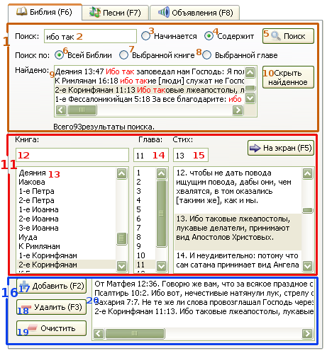

2.2 Показ стихов из Библии
Софт Проектор может показывать одновременно только один стих из Библии.
Опция показа сразу нескольких стихов возможно появится в будущем.
Можно также показывать один и тот же стих сразу из двух разных Библий.
Для показа стиха:
Можно выбрать книгу также по фильтру (12) в окне над списком книг Библии.
либо задайте номер главы вручную в текстовом окошке над списком глав.
либо задайте номер стиха вручную в текстовом окошке над столбцом со стихами.
После того как выбран нужный стих, можно нажать кнопку "На экран"
либо дважды щелкнуть мышью по стиху.

1. Поиск по Библии:
Здесь можно искать стихи Библии по фразе или по словам.
- 2. Окно поиска по тексту:
Сюда вводятся слова/фразы для поиска. Окно поиска чувствительно к регистру,
а все знаки, кроме буквенно-цифровых, автоматически удаляются.
- 3. Начинается:
Поиск стихов, которые начинаются с заданного слова или фразы.
- 4. Содержит:
Поиск стихов, которые содержат заданное слово или фразу.
Одновременно находятся стихи, которые начинаются с этого же слова или фразы.
- 5. Кнопка "Поиск":
При ее нажатии осуществляется поиск по Библии и вывод результатов в нижнем окне.
- 6. Поиск по всей Библии:
Поиск осуществляется по всей Библии.
- 7. Поиск по выбранной книге:
Поиск осуществляется только по выбранной книге Библии.
- 8. Поиск по выбранной главе:
Поиск осуществляется только по выбранной главе.
- 9. Список найденных стихов:
В этом окне выводятся результаты поиска. Заданные для поиска слова или фразы обозначаются
красным цветом. Однако фразы, содержащие знаки пунктуации
или не алфавитно-номерные знаки не всегда обозначаются красным, хотя и будут
выведены в окно найденных стихов.
Например: заданная фраза "свет что" не обозначится красным цветом,
хотя поиск выдаст результат "свет, что".
Софт Проектор может выводить в результате поиска не более 281 стихов.
При этом под окном найденных стихов показывается их количество, а также указывается
превышение лимита, если он случается. При превышении лимита,
нужно изменить искомое слово или фразу, либо использовать другие опции поиска.
Двойной щелчок по стиху отсылает его в правое окно для показа на экране.
- 10. Кнопка "Скрыть найденное":
При ее нажатии исчезает окно с найденными стихами.
11. Блок просмотра Библии:
В этой части интерфейса можно просматривать и готовить стихи Библии
перед их выводом на экран.
- 12. Окно быстрого поиска:
Быстро найти место из Библии можно, если ввести в это окно
название книги, главу и стих, разделенные пробелами (" ").
При этом программа найдет нужный стих автоматически.
После того, как стих найден, нажмите "F5" или щелкните по кнопке "На экран".
Не обязательно вводить полное название книги, достаточно нескольких начальных букв,
например: мар для Марка.
Если у книги есть номер, то между номером и названием книги не нужен пробел, т.е.
для поиска 1 Коринфянам, нужно вводить не1 кор ,
а 1кор .
Примеры правильного ввода для поиска:
для Даниила 3:12 - нужно ввести: да 3 12;
для 1 Фессалоникийцам 5:8 - нужно ввести: 1фес 5 8, и т.д.
- 13. Список книг:
Содержит либо список всех книг Библии, либо только тех, которые заданы в окне выбора книги.
- 14. Окно ввода и список глав:
Номер главы можно либо задать в окне, либо выбрать из списка.
- 15. Окно ввода и список стихов:
Номер стиха можно либо задать в окне, либо выбрать из списка.
Двойной щелчок по стиху в списке переносит его в окно вывода на экран.
16. Блок истории и временного хранения:
В этой части интерфейса содержатся стихи, которые были посланы на экран,
а также добавленные с помощью кнопки "Добавить".
- 17. Кнопка "Добавить":
С помощью кнопки "Добавить" выбранные выше стихи добавляются в список истории.
- 18. Кнопка "Удалить":
С помощью кнопки "Удалить" выбранные стихи удаляются из списка истории.
- 19. Кнопка "Очистить":
С помощью кнопки "Очистить" удаляется сразу весь список истории.
- 20 Список истории:
Всякий стих, показанный на экране, заносится в список истории
и находится там до его удаления. Двойной щелчок по стиху
выводит его на экран без повторного занесения в список.
|